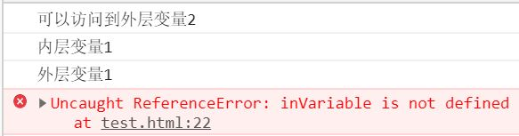

ES6 之前 JavaScript没有块级作用域,只有全局作用域和函数作用域。ES6的到来，为我们提供了‘块级作用域’,可通过新增命令let和const来体现。
- 作用域(Scope)
- var和let和const的区别
作用域(Scope)
作用域是可访问变量的集合。
示例
1 | function Fun() { |
从上面的例子中可以看出，因在全局作用域里没有声明value变量，所以在全局作用域下取值会报错。简单理解:作用域就像一个独立的区域，让变量不会外泄。
全局作用域和函数作用域
1 | // --全局作用域的变量声明-- |

从上面的例子可以看出函数作用域内的value变量和全局作用域的value并不会冲突。而且外层作用域不能访问到内层的变量，而内层可以访问到外层的变量，所以
隔离变量，不同作用域下同名变量不会有冲突。
作用域是分层的，内层作用域可以访问外层作用域的变量，反之则不行。
块级作用域
ES6中新增了块级作用域，使用let声明的变量只能在块级作用域里访问，有“暂时性死区”的特性（也就是说声明前不可用）。
块作用域由 { } 包括，主要是以下几种
1 | // 条件语句 |
注意: 对象的大括号内不是一个块级作用域, 因为它里面不能直接声明变量;
var和let和const的区别
- var定义的变量，没有块的概念，可以跨块访问, 不能跨函数访问。且存在变量提升现象
- let定义的变量，只能在块作用域里访问，不能跨块访问，也不能跨函数访问。不存在变量提升现象
- const用来定义常量，使用时必须初始化(即必须赋值)，只能在块作用域里访问，而且不能修改。
1 | { |